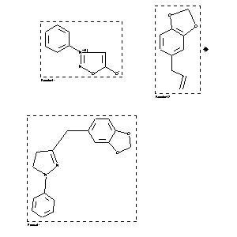

|  |
| FA | RX(1); FLST(1); RX(1) |
Reaction (1 of 1)
| Reaction ID | 958725 |
| Reactant BRN | 1842445; 136380 |
| Reactant | 3-phenyl-sydnone; 5-allyl-benzo[1,3]dioxole |
| Product BRN | 2997705 |
| Product | 3-benzo[1,3]dioxol-5-ylmethyl-1-phenyl-4,5-dihydro-1H-pyrazole |
| No. of Reaction Details | 1 |
Reaction Details (1 of 1)
| Reaction Classification | Preparation |
| Temperature | 150 |
| Citation Pointer | 39497; Journal; Gotthardt,H.; Huisgen,R.; CHBEAM; Chem.Ber.; GE; 101; 1968; 552-563; |
Reference (1 of 1)
| Citation Number | 39497 |
| Document Type | Journal |
| Authors | Gotthardt,H.; Huisgen,R. |
| CODEN | CHBEAM |
| Journal Title | Chem.Ber. |
| Language Code | GE |
| (Series) Volume | 101 |
| Publication Year | 1968 |
| Page | 552-563 |